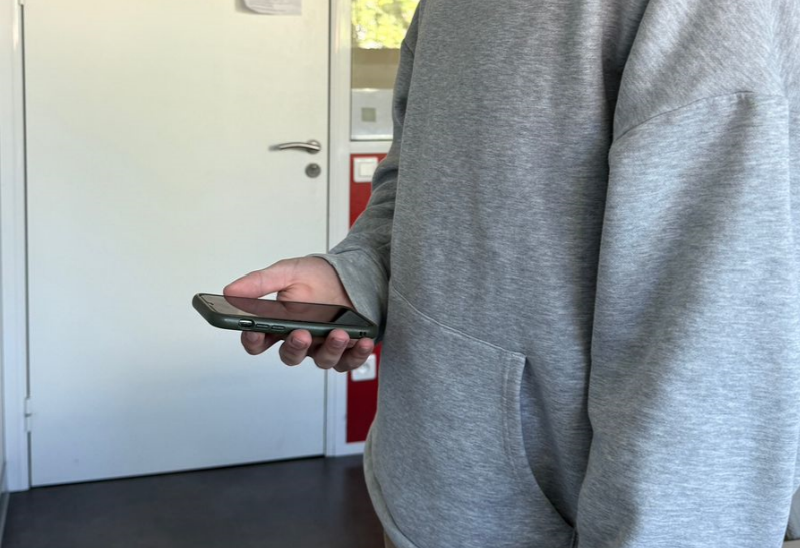

/**
* @file motion_recorder.js
* @brief Motion Recorder Web App for Human Movement Data Collection
*
* This script powers a web-based tool used for collecting motion data from smartphones
* during predefined physical activities such as walking, turning, and stair climbing.
* The motion data is collected via the DeviceMotion API and stored in a CSV format.
*
* @details
* Features:
* - Interactive HTML interface for test execution with step-by-step guidance
* - Animations for turning (left/right) with visual vector rotation feedback
* - Separate controls for stairs up/down activities
* - DeviceMotion data recording (acceleration and gyroscope)
* - Downloadable CSV export
*
* UI Components:
* - Setup screen: User enters their name and device model
* - Experiment sequence with visual instructions and progress bars
* - Training vectors for rotational steps
* - Dual-button interface for stair movements
* - Final download screen with user data export
*
* Logic Components:
* - Steps and repetition logic for guiding the user through fixed test sequences
* - Rotation angle persistence between left/right visualizations
* - Recording timing synchronized with visual animations
* - Labeling and segmenting of data based on action type and repetition
*
* Developed as part of the Virtual UTTOP project for motion research and digital twin simulations.
*
* @author Sebastian Meyer
* @date 2025
* @license MIT
*/
Motion Recorder
Step 1: Enter Your Information

Please enter your name and the model of your smartphone. This information is optional — if you prefer not to share it, you can simply write “unknown”.
In the next steps, you will perform physical movements while holding your phone in your hand. After completing all steps, you will be able to download your motion data and send it via email to the Virtual UTTOP group. The email address will be shown at the end.
Important:
Hold your phone naturally — as if you were using it for navigation while walking.
Make sure you have enough space to turn, walk, and use a staircase safely.
Be especially careful when going up or down the stairs.
The entire session will take around 5 minutes.
Thank you for your support — and enjoy this short movement session!
Motion Recorder Setup
Ready.
Waiting for data...
Step 15: Send Your Data
You have completed the session — thank you!
Now press the Download button to save the recorded motion data as a CSV file.
Please send the file via email to:
sebastian.meyer@etudiant.uttop.fr
Important note:
If you feel that the movements were not performed correctly, please do not send the data.
You may repeat the session as many times as you like.
Feel free to use it as a short and active break in your daily routine.
Thank you again for your time and your valuable contribution to the Virtual UTTOP project!